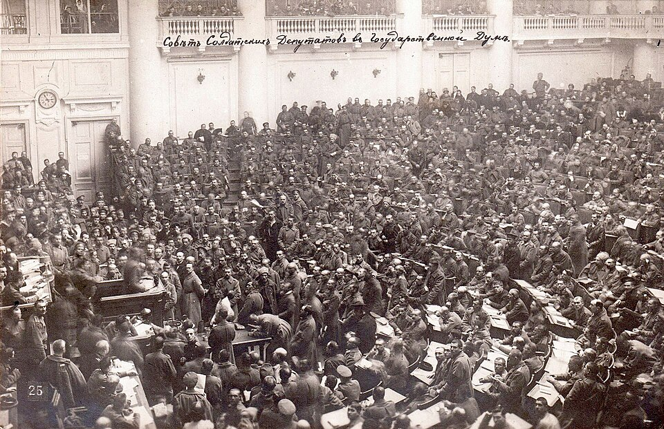

Los bolcheviques toman el Palacio de Invierno y derriban al gobierno de Kerenski
Un cañonazo de fogueo del crucero Aurora dio la señal en la noche de Petrogrado, y de madrugada los ministros fueron arrestados en el propio comedor del palacio. Lenin promete paz, pan y tierra. El gobierno nacido de la caída del zar cayó con menos ruido que un cambio de guardia.

El Palacio de Invierno, residencia de los zares y sede del gobierno provisional, cayó esta madrugada en manos de los bolcheviques. Anoche, hacia las diez, el crucero Aurora, anclado en el Neva con la tripulación sublevada, disparó un cañonazo de fogueo que era la señal convenida; horas después, los revolucionarios que se habían ido filtrando por patios y escaleras arrestaron a los ministros en el comedor donde deliberaban, y los condujeron a pie a la fortaleza de Pedro y Pablo. El reloj de la sala quedó marcando las dos y diez. En el resto de la ciudad, asombrosamente, funcionaron los tranvías y los teatros no suspendieron sus funciones.
El golpe es la culminación de un año vertiginoso. En febrero, el hambre y el motín voltearon a Nicolás II; desde entonces gobernó una república improvisada, presidida en los últimos meses por Alejandro Kerenski, que cometió el error capital de continuar la guerra contra Alemania. Tres años de matanza, los campos sin brazos, el pan racionado y un ejército que se deshace en deserciones dieron su público a los bolcheviques, la facción más extrema del socialismo ruso, que desde abril repite por boca de su jefe, Vladimir Ulianov, llamado Lenin, un programa de tres palabras: paz, pan y tierra. Los soviets —los consejos de obreros y soldados— fueron cayendo uno a uno en sus manos.
La operación, dirigida desde el instituto Smolny por el comité militar revolucionario que anima León Trotski, se ejecutó con precisión y casi sin sangre: en la noche fueron ocupados los puentes, las estaciones, la central telefónica y el telégrafo, de modo que la capital amaneció tomada sin haberse enterado. Kerenski salió temprano en un automóvil facilitado por la embajada americana, a buscar tropas leales en el frente; sus carteles llamando a la resistencia se despegan solos de las paredes con la humedad. Ante el congreso de los soviets, los socialistas moderados abandonaron la sala en protesta; Trotski los despidió con una frase que hará camino: al basurero de la historia.
La defensa del palacio pinta la agonía del régimen: unos centenares de cadetes, un batallón femenino y oficiales sin órdenes, que se fueron desbandando con las horas ante los miles de guardias rojos, soldados y marinos. Más que un asalto épico hubo una lenta marea que entraba por puertas mal cerradas. Los vencedores encontraron a los ministros alrededor de una mesa llena de borradores de proclamas nunca terminadas. Los muros de la ciudad están empapelados con el anuncio de Lenin: el gobierno provisional ha sido depuesto, el poder pasa a los soviets. Se anuncian el armisticio inmediato, la tierra para los campesinos y el control obrero de las fábricas.
¿Cuánto durará? En las cancillerías, y hasta en el propio congreso de los soviets, se cuentan por días las semanas del nuevo gobierno: no controla el frente ni el campo, y media Rusia ignora aún que existe. Pero conviene no medir con vara chica lo que acaba de ocurrir: por primera vez, un partido que se proclama de los obreros toma el poder de un imperio para retirarse de la guerra y repartir la tierra. Este diario, que una tarde de julio de 1789 vio al pueblo de París tomar una fortaleza, sabe que estas jornadas se juzgan por décadas y no por semanas. Rusia acaba de salirse del mapa conocido; el resto del mundo hará bien en mirar.